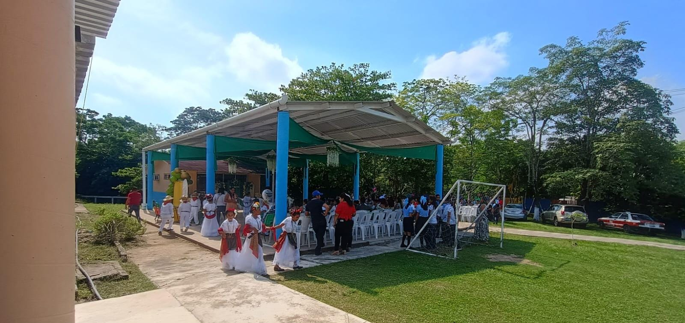
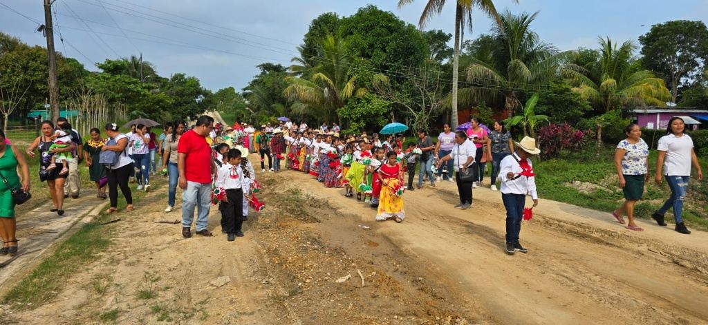
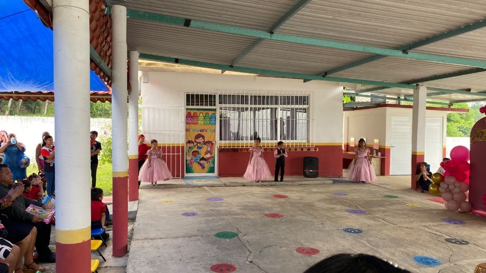
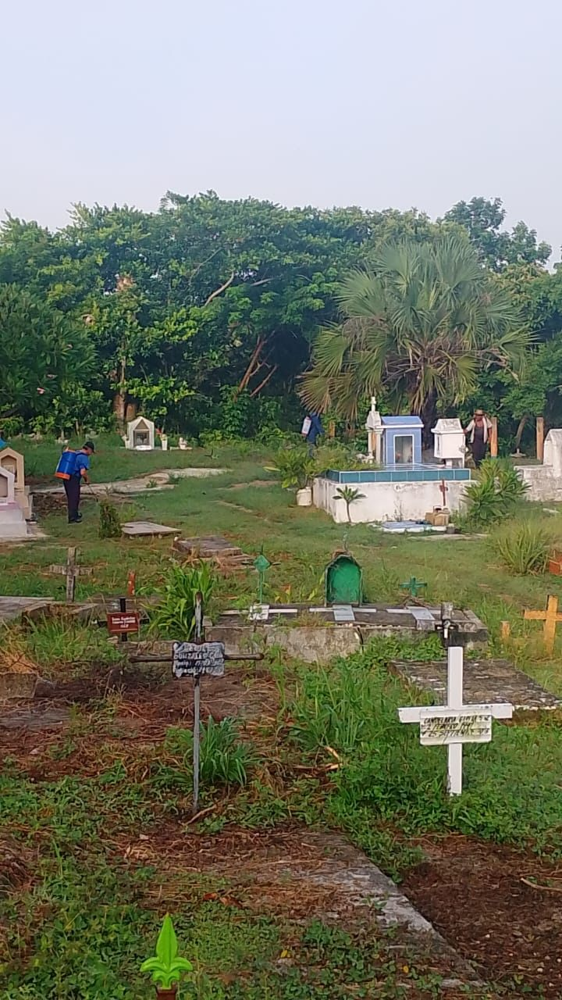
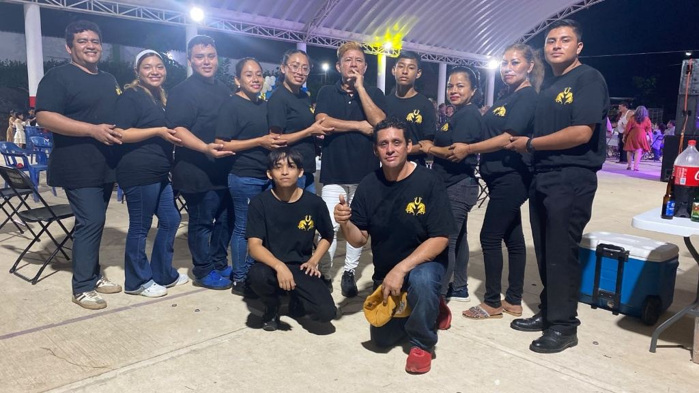
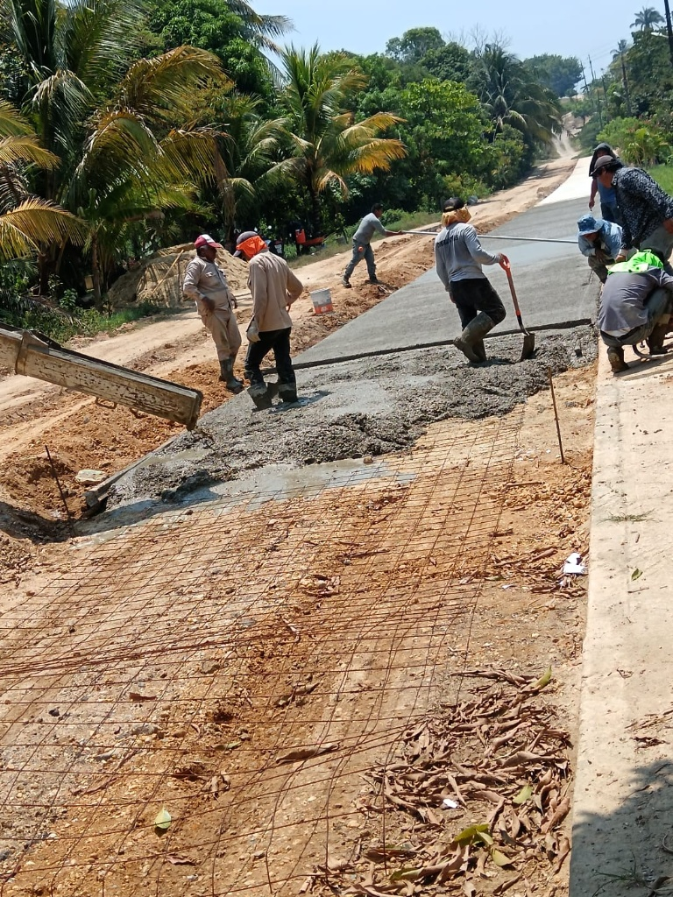
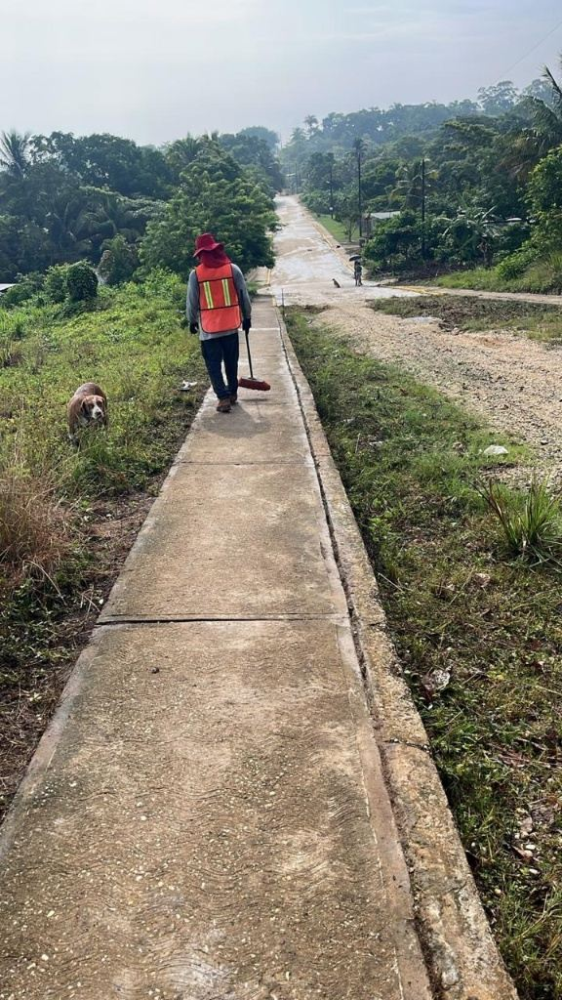
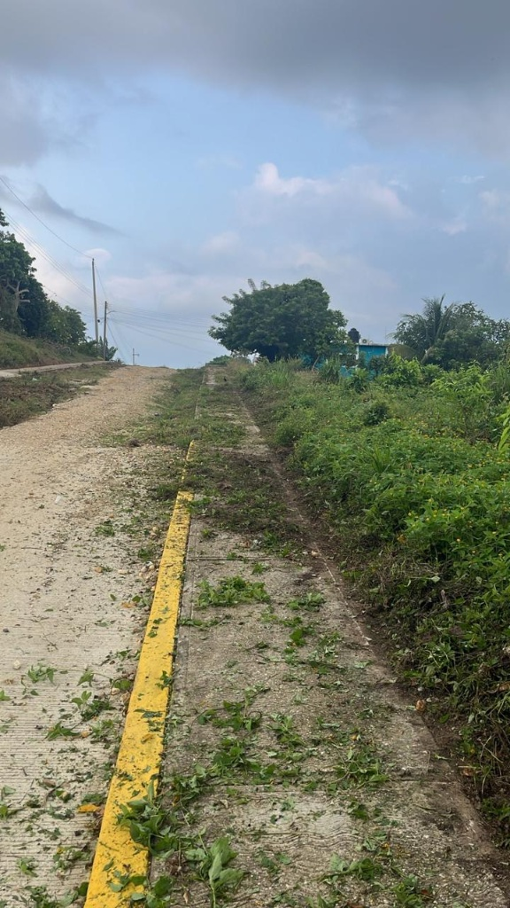
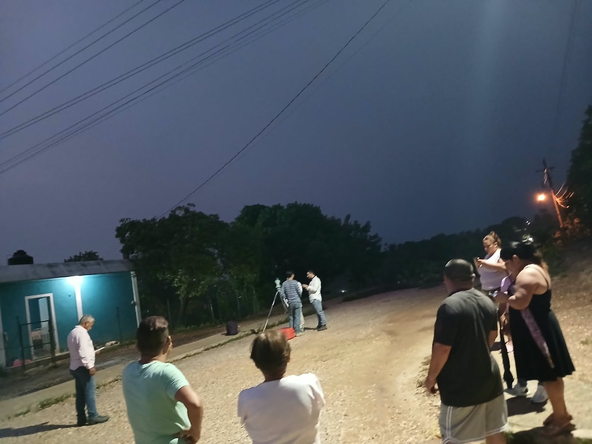

Cultura Escolar
Festivales Folclóricos
Presentaciones de baile y estampas tradicionales en el domo comunitario por parte de estudiantes locales.
Registro de festividades, faenas de trabajo y vida social en Trancas Viejas
Las calles de Trancas Viejas se llenan de color y tradición durante las celebraciones cívicas y culturales del año. Las familias se reúnen para acompañar a los contingentes escolares y contingentes locales en recorridos tradicionales.
Estas actividades fortalecen el tejido social y la transmisión de costumbres tradicionales a las niñas y niños de la localidad.

Encuentros culturales, eventos escolares y costumbres religiosas

Presentaciones de baile y estampas tradicionales en el domo comunitario por parte de estudiantes locales.

Ceremonias y festivales de graduación en los planteles educativos de la comunidad.

Jornadas de limpieza y mantenimiento en el panteón previo a las conmemoraciones de los fieles difuntos.

Reuniones festivas y grupos organizadores que impulsan los festejos y eventos del ejido.
Esfuerzo coordinado para el mantenimiento y mejora de la infraestructura local

Trabajos de colado de concreto y construcción de vialidades para el desarrollo del poblado.

Mantenimiento constante de banquetas y accesos para garantizar la movilidad peatonal segura.

Limpieza comunitaria en los laterales de las avenidas y caminos pavimentados.

Encuentros de vecinos para dar seguimiento a proyectos de obra pública y acuerdos del ejido.